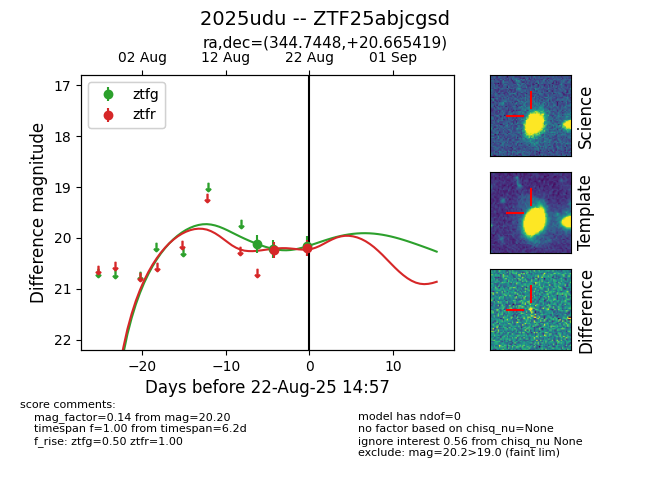

Target 2025udu at 2025-08-22 14:57, see:
FINK: fink-portal.org/ZTF25abjcgsd
Lasair: lasair-ztf.lsst.ac.uk/objects/ZTF25abjcgsd
ALeRCE: alerce.online/object/ZTF25abjcgsd
TNS: wis-tns.org/object/2025udu
YSE: ziggy.ucolick.org/yse/transient_detail/2025udu
alt names
ZTF25abjcgsd (ztf,alerce)
2025udu (tns,yse)
coordinates:
equatorial (ra, dec) = (344.7448,+20.66542)
galactic (l, b) = (90.3675,-34.99786)
photometry
last ztfg=20.16, ztfr=20.20
3 ztfg, 2 ztfr detections
